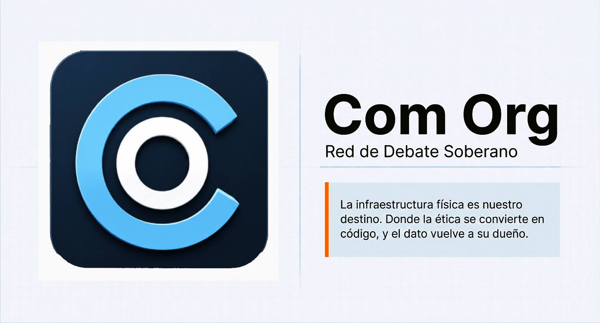
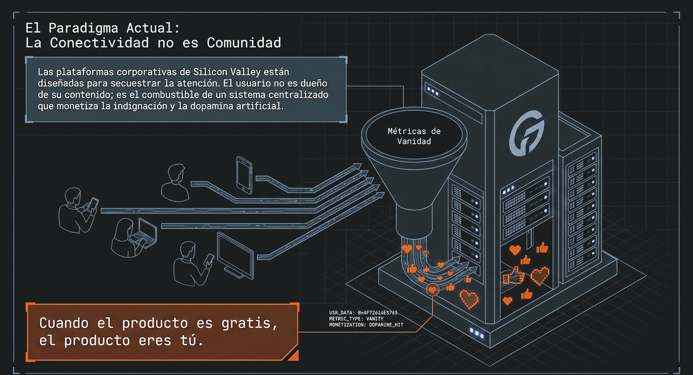
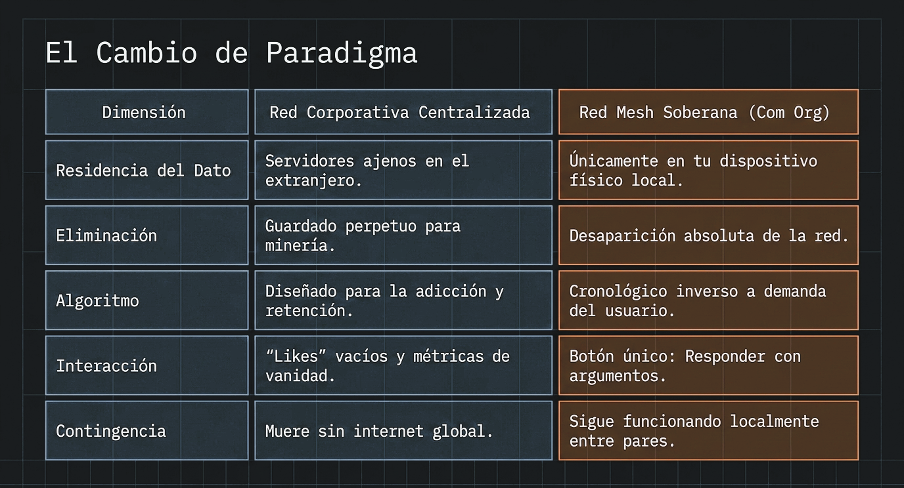
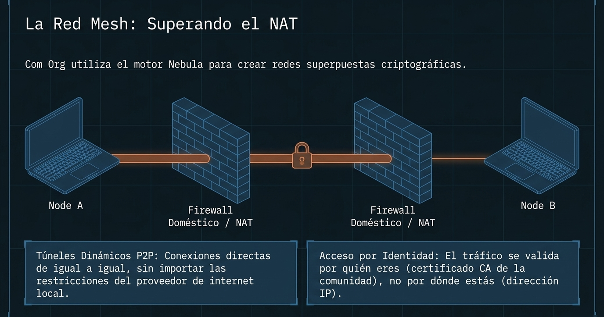
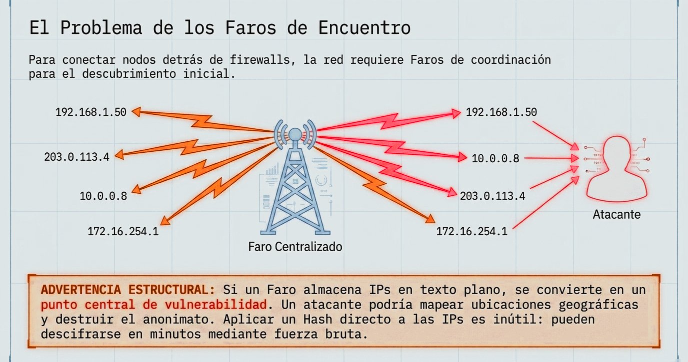
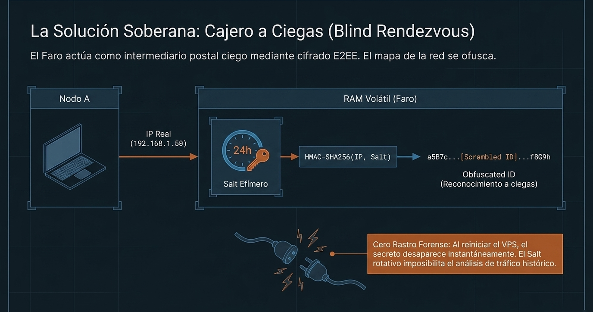
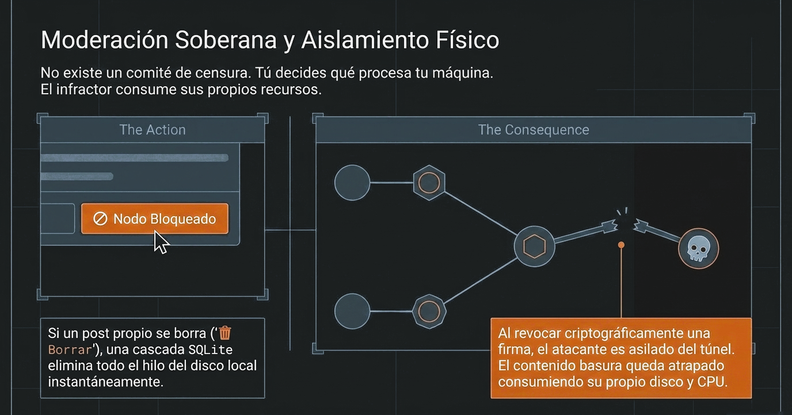

Una herramienta de organización popular y debate libre, 100 % blindada contra la censura. Sin empresas, sin algoritmos adictivos, sostenida por la propia comunidad.
Las plataformas corporativas no son herramientas: son trampas diseñadas para secuestrar tu atención y monetizar tu indignación.
"Cuando el producto es gratis, el producto eres tú."

Las corporaciones de Silicon Valley secuestran tu atención. Tu indignación es su combustible financiero. No sos dueño de lo que escribís; te lo pueden borrar con un click.
Tu dispositivo es tu territorio.

En Com Org no hay servidores centrales en el extranjero. El contenido vive en tu máquina. Las interacciones no buscan adicción, buscan profundidad. Si borrás algo, desaparece de la red de verdad.
Com Org no es una red comercial ni una red federada (como Mastodon o Bluesky). No vas a encontrar un muro infinito diseñado para hacerte perder el tiempo. Es una herramienta de software sofisticada pensada para la resistencia cultural, la autonomía comunicativa y la libre expresión blindada por hardware inmutable.
Cada decisión de diseño tiene una razón ética y una razón técnica. Ambas son inseparables.
Tu identidad y publicaciones viven únicamente en tu disco. El control es físico: apagar la app desconecta tu nodo.
Eliminamos los "likes" y las métricas de vanidad. La única vía de interacción es el debate real mediante argumentos.
Sin servidores centrales que subsidien bots: emitir mensajes tiene un costo real en CPU y disco local. El límite es la física.
La interfaz asíncrona guía al usuario de manera orgánica sin bloquearlo abruptamente. Las reglas numéricas exigen profundidad sobre inmediatez.
| Característica | Red Centralizada (Ej: X) | Com Org (Red Mesh Soberana) |
|---|---|---|
| ¿Dónde viven tus datos? | En servidores ajenos en el extranjero. | Únicamente en tu dispositivo local. |
| Si borrás una publicación… | Queda guardada para siempre en sus bases de datos. | Desaparece por completo de la red. |
| ¿Cómo se ordena lo que ves? | Por un algoritmo diseñado para volverte adicto. | A demanda. Vos elegís qué leer y cuándo explorar. |
| Interacción básica | "Likes" vacíos que manipulan tu dopamina. | Botón directo ↩ Responder con argumentos. |
| Si se cae el Internet global… | La plataforma muere por completo. | Sigue funcionando localmente entre usuarios conectados. |
Explicamos la arquitectura técnica de igual a igual (P2P) sin abrumarte. Cada pieza tiene un propósito.

Com Org usa el motor Nebula para crear redes superpuestas criptográficas. Las conexiones son directas de igual a igual (P2P), sin importar las restricciones o bloqueos de tu proveedor local de internet. El tráfico se valida por quién sos (certificado CA de la comunidad), no por dónde estás (dirección IP).

Para que los nodos se encuentren, se necesitan Faros de coordinación. Pero si un faro almacena IPs en texto plano, se convierte en un punto central de vulnerabilidad. Un atacante podría mapear ubicaciones geográficas y destruir el anonimato. Com Org resuelve esto con una solución criptográfica radical.

Nuestros faros actúan como carteros ciegos: unen nodos mediante llaves públicas sin conocer jamás sus IPs reales. Usamos un Salt efímero rotativo en RAM volátil con HMAC-SHA256. Al reiniciar el VPS, el secreto desaparece instantáneamente. Cero rastro forense.

Aquí no hay comité de censura empresarial. Vos decidís qué procesa tu máquina. Al bloquear una firma criptográfica, el infractor queda aislado del túnel. El contenido basura queda atrapado consumiendo su propio disco y CPU. El filtro no es ideológico: es físico.
El primer faro de la red fue construido a pulmón con hardware reciclado. Pero para que esta infraestructura sea inmortal e incontrolable por el poder de turno, no puede depender de una sola persona. Si el software es libre, la infraestructura también debe ser comunitaria.
Asambleas, sindicatos y comunidades financian de forma anónima sus propios faros regionales a un costo mínimo.
Si un faro cae o es atacado, el enjambre se apoya instantáneamente en la infraestructura vecina. La red no muere.
Sentí el orgullo de fundar la primera red de comunicación verdaderamente soberana y libre de nuestro territorio.
Múltiples arquitecturas y sistemas operativos unidos por una malla criptográfica inquebrantable. Ningún servidor corporativo. Control absoluto en los márgenes.
Com Org es un proyecto vivo y transparente. Generamos confianza permitiendo auditar el código y el comportamiento de la red.
Actualmente consolidamos el Nodo Base de Escritorio (con persistencia estricta en SQLite local y túneles P2P nativos) y avanzamos en el Nodo de Bolsillo para Android mediante servicios VPN nativos sin requerir root.
Respuestas directas. Sin eufemismos corporativos.
¿Por qué es gratis si no tiene publicidad?
Porque mantener la red cuesta prácticamente cero. Cada usuario aporta un grano de arena prestando una fracción de su procesador y almacenamiento. No hay que pagarle infraestructura millonaria a ninguna corporación tecnológica.
¿Quién modera lo que se publica?
Vos. Tu aplicación local clasifica estrictamente el contenido (Opinión, Datos Públicos o Memes). Si configurás tu pantalla para no leer ciertas etiquetas o bloquear a un usuario, tu máquina obedece al instante. Nadie centralmente decide por vos qué es aceptable.
¿Cómo se frena el contenido dañino o ilegal si no hay un dueño?
Mediante aislamiento físico, no con censura. Para ingresar a debatir necesitás un certificado comunitario. Si un usuario viola las reglas éticas, su acceso se revoca y queda completamente aislado. Ese contenido basura consume la batería y el espacio de quien lo creó, sin poder propagarse a los demás.
¿Funciona si no tengo internet?
Sí. En la Fase de Sincronización Portátil (próxima), los nodos locales en la misma red Wi-Fi o Bluetooth podrán intercambiar contenido sin necesidad de internet global. El enjambre local sobrevive a los apagones.
¿Es seguro instalar un nodo en mi celular?
El Nodo de Bolsillo Android usa VpnService nativo sin requerir root ni permisos especiales de sistema. Tu IP real nunca se almacena; solo se transmite un ID obfuscado de 24 horas que desaparece automáticamente.
Visualizá el funcionamiento de la red soberana Com-Org y el flujo del enjambre P2P.